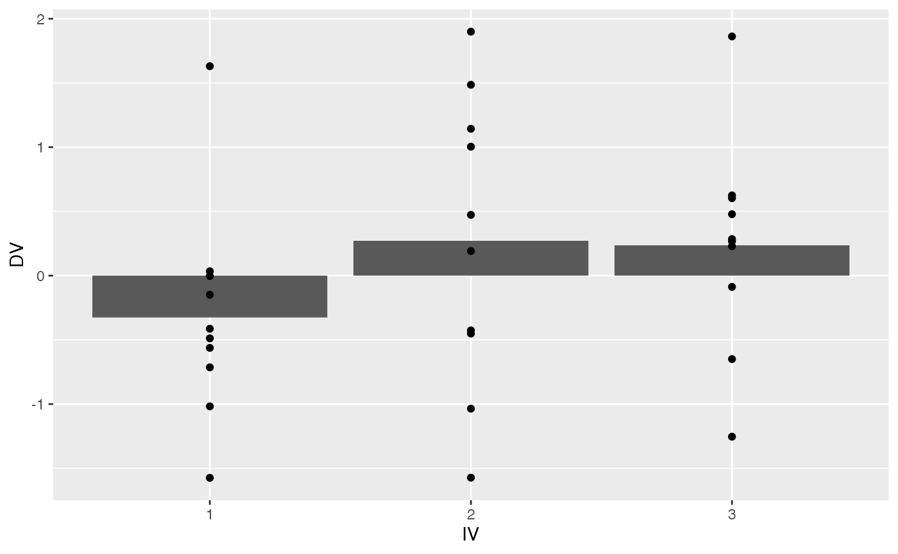
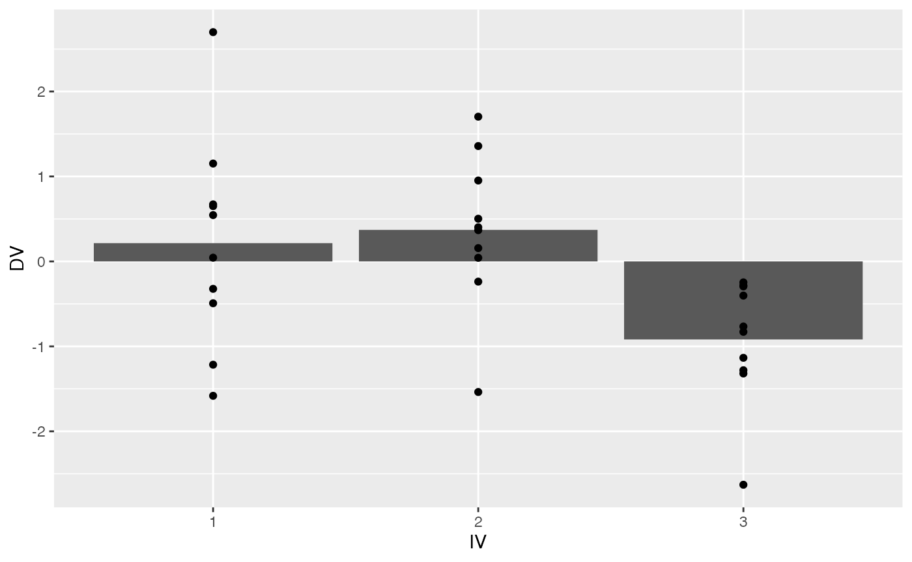

Lab 5
Amanda Murphy
3/14/2022
Lab5.Rmd#1. pwr function– compute anova POWER
library(pwr)
pwr.anova.test(k=3,
n=10,
f=.25,
sig.level = .05,
power =)##
## Balanced one-way analysis of variance power calculation
##
## k = 3
## n = 10
## f = 0.25
## sig.level = 0.05
## power = 0.1951401
##
## NOTE: n is number in each group## Warning: package 'effectsize' was built under R version 4.1.2
run_simultation <- function(){
levels <- 4
n_per_level <- 10
# repeat the above many times to compute the F-distribution
alternative_data <- tibble(subjects = 1:(levels*n_per_level),
IV = as.factor(rep(1:levels, each = n_per_level)),
DV = c(rnorm(n_per_level, 0, 1),
rnorm(n_per_level, 0, 1),
rnorm(n_per_level, 1, 1),
rnorm(n_per_level, 0, 1)
)
)
aov.out <- aov(DV ~ IV, data = alternative_data)
summary_out <- summary(aov.out)
eta.squared(aov.out)
}Create simulated data for the above design that could be produced by the null hypothesis, and that results in a 𝐹 F value that is smaller than the critical value for 𝐹 F in this design (assume alpha = .05). Report the ANOVA, and show a ggplot of the means in the simulated data. Furthermore, display the individual data points on top of the means. Would you reject the null hypothesis in this situation, and would you be incorrect or correct in rejecting the null? (3 points)
library(tibble)
# construct a dataframe to represent sampling random subjects into each group of the design
levels <- 3
n_per_level <- 10
random_data <- tibble(subjects = 1:(levels*n_per_level),
IV = as.factor(rep(1:levels, each = n_per_level)),
DV = rnorm(levels*n_per_level, 0, 1)
)
critical_F <- qf(.95,2,27)
# compute the ANOVA and extracted the F-value
aov.out <- aov(DV ~ IV, data = random_data)
simulated_F <- summary(aov.out)[[1]]$`F value`[1]
# repeat the above many times to compute the F-distribution
save_F_values <- length(1000)
for(i in 1:1000){
random_data <- tibble(subjects = 1:(levels*n_per_level),
IV = as.factor(rep(1:levels, each = n_per_level)),
DV = rnorm(levels*n_per_level, 0, 1)
)
aov.out <- aov(DV ~ IV, data = random_data)
simulated_F <- summary(aov.out)[[1]]$`F value`[1]
save_F_values[i] <- simulated_F
if(simulated_F < critical_F) break
}
summary(aov.out)## Df Sum Sq Mean Sq F value Pr(>F)
## IV 2 2.635 1.3175 1.545 0.232
## Residuals 27 23.029 0.8529
#GRAPH
library(ggplot2)
ggplot(random_data, aes(x= IV, y=DV))+
geom_bar(stat= "summary", fun= "mean")+
geom_point()
#No you would not reject the null for the random simulated data because the F value is not larger than the critical F computed for this data set.
- Create simulated data for the above design that could be produced by the null hypothesis, and that results in a 𝐹 F value that is larger than the critical value for 𝐹 F in this design (assume alpha = .05). Report the ANOVA, and show a ggplot of the means in the simulated data. Furthermore, display the individual data points on top of the means. Would you reject the null hypothesis in this situation, and would you be incorrect or correct in rejecting the null? (3 points)
# construct a dataframe to represent sampling random subjects into each group of the design
levels <- 3
n_per_level <- 10
random_data <- tibble(subjects = 1:(levels*n_per_level),
IV = as.factor(rep(1:levels, each = n_per_level)),
DV = rnorm(levels*n_per_level, 0, 1)
)
critical_F <- qf(.95,2,27)
# compute the ANOVA and extracted the F-value
aov.out <- aov(DV ~ IV, data = random_data)
simulated_F <- summary(aov.out)[[1]]$`F value`[1]
# repeat the above many times to compute the F-distribution
save_F_values <- length(1000)
for(i in 1:1000){
random_data <- tibble(subjects = 1:(levels*n_per_level),
IV = as.factor(rep(1:levels, each = n_per_level)),
DV = rnorm(levels*n_per_level, 0, 1)
)
aov.out <- aov(DV ~ IV, data = random_data)
simulated_F <- summary(aov.out)[[1]]$`F value`[1]
save_F_values[i] <- simulated_F
if(simulated_F > critical_F) break
}
summary(aov.out)## Df Sum Sq Mean Sq F value Pr(>F)
## IV 2 6.69 3.345 4.921 0.0151 *
## Residuals 27 18.35 0.680
## ---
## Signif. codes: 0 '***' 0.001 '**' 0.01 '*' 0.05 '.' 0.1 ' ' 1
#GRAPH
library(ggplot2)
ggplot(random_data, aes(x= IV, y=DV))+
geom_bar(stat= "summary", fun= "mean")+
geom_point() ```